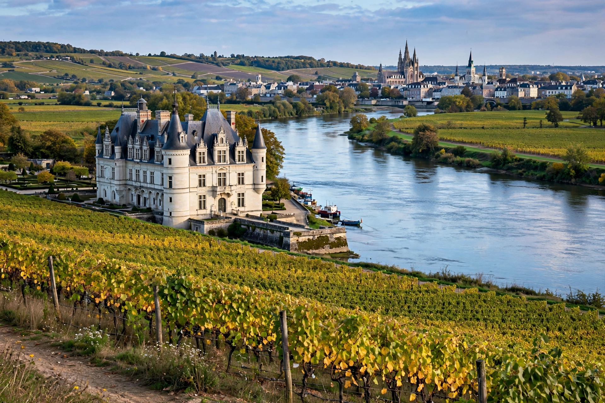

Centre-Val de Loire is an administrative region of France, known until 2015 simply as Centre. It comprises six departments — Cher, Eure-et-Loir, Indre, Indre-et-Loire, Loir-et-Cher and Loiret — with Orléans as regional prefecture and Tours as its largest city.

| Country | France |
|---|---|
| Prefecture | Orléans |
| Departments | 6 |
| Area | 39,151 km² |
| Population | About 2.6 million |
The Loire river crosses the region east to west; the Val de Loire between Sully-sur-Loire and Chalonnes is a UNESCO World Heritage cultural landscape famous for its châteaux. The Beauce plain in the north is a major wheat-growing area, while the Sologne is a land of forests and ponds and Brenne a wetland of lakes.
The region covers historic provinces including Orléanais, Touraine and Berry. In the Renaissance the French court resided in Loire châteaux such as Chambord, Blois and Amboise. Chartres Cathedral, Bourges Cathedral and the historic standard French once associated with the Loire valley are cultural landmarks.